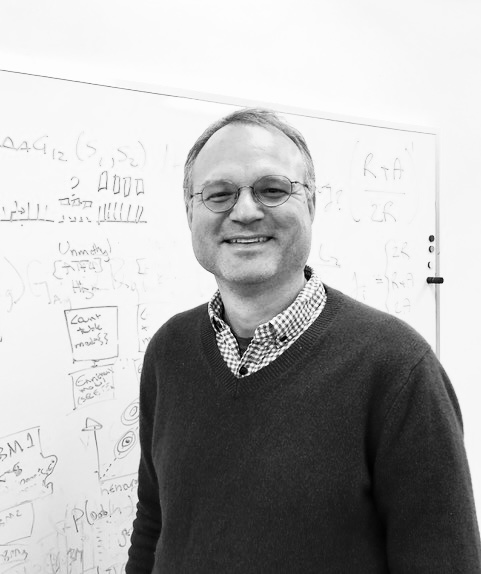

Pioneers of quantitative biophysics from high-throughput biology
From the beginnings of computational genomics to the NGS/-omics era, we have designed category-defining, state-of-the-art methods for sequence-to-function analyses
Chaitanya Rastogi, PhDCo-Founder
PhD in Computational Biology at Columbia
BS, MS in Physics & Business at Caltech
Columbia University

Harmen Bussemaker, PhDCo-Founder
Professor of Biological Sciences and Systems Biology at Columbia
Universiteit UtrechtThe Rockefeller University
Columbia University
Metric.